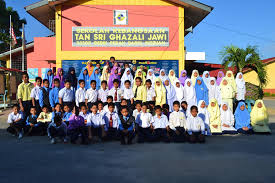

Educational Background
My educational journey began at primary school, then I continued to secondary school, foundation program, and finally, my degree.
School Year
Then, I continued my education at Sekolah Menengah Kebangsaan Sultan Idris Shah II. This is where I furthered my academic skills and discovered my passion for English and Computer Science. During my time in secondary school, I participated in various extracurricular activities, including the STEM Club and various kinds of sports. All these helped me develop my communication, leadership, and teamwork skills.
Foundation Program
Degree
One of the highlights of my university experience was my involvement in research projects. I had the opportunity to work with professors and fellow students on cutting-edge research in system management. These projects involved data analysis, system design, and the development of innovative solutions to complex problems. Through these experiences, I gained a deeper understanding of the field and developed a passion for continuous learning and innovation
Throughout my academic journey, I have been committed to excellence and continuous learning. Each educational stage has equipped me with the skills and knowledge necessary to succeed in my professional career. The experiences and challenges I encountered have shaped me into a resilient and adaptable individual. My educational journey has not only provided me with academic knowledge but also taught me the importance of perseverance, collaboration, and lifelong learning. These qualities have been instrumental in shaping my personal and professional development, and I am confident that they will continue to guide me in my future endeavors.
"From Classrooms to Campuses"
.jpeg)